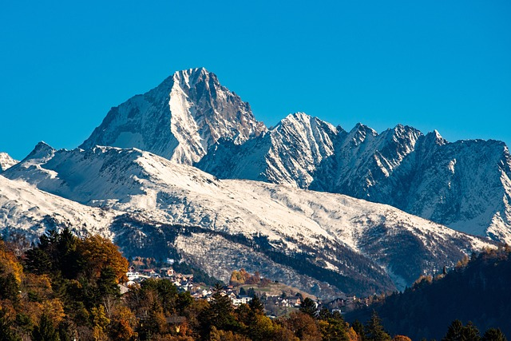

Explore some of the amazing places found in Kenya
Maasai Mara is one of Kenya's most famous wildlife destinations. It is located in southwestern Kenya and is well known for its large populations of wildlife.
Visitors can see lions, elephants, cheetahs, zebras, giraffes, wildebeest and many other animals.
The Maasai Mara is also famous for the annual wildebeest migration, when large numbers of wildebeest and other animals move between Kenya and Tanzania.

Amboseli National Park is located in southern Kenya near the border with Tanzania.
The park is famous for its large elephant population and beautiful views of Mount Kilimanjaro across the border in Tanzania.
Visitors can enjoy game drives and observe wildlife in the open plains of the park.

Diani Beach is one of Kenya's popular coastal destinations. It is located south of Mombasa along the Indian Ocean.
The area is known for its white sandy beaches and warm tropical waters.
Visitors can enjoy swimming, relaxing on the beach, boat trips and other water activities.

Lake Nakuru is located in Nakuru County and is surrounded by beautiful landscapes.
The area is known for wildlife and bird watching. Visitors may see rhinos, giraffes, buffaloes and many different bird species.

Mount Kenya is the highest mountain in Kenya and the second-highest mountain in Africa.
It attracts hikers, climbers and nature lovers. The mountain has different vegetation zones and beautiful landscapes.